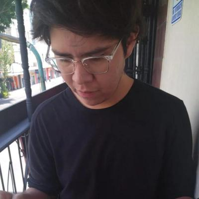
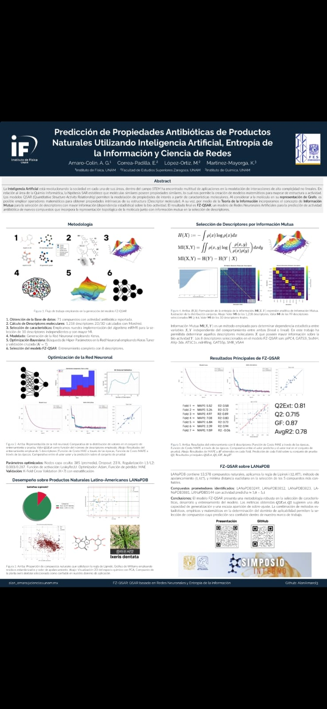
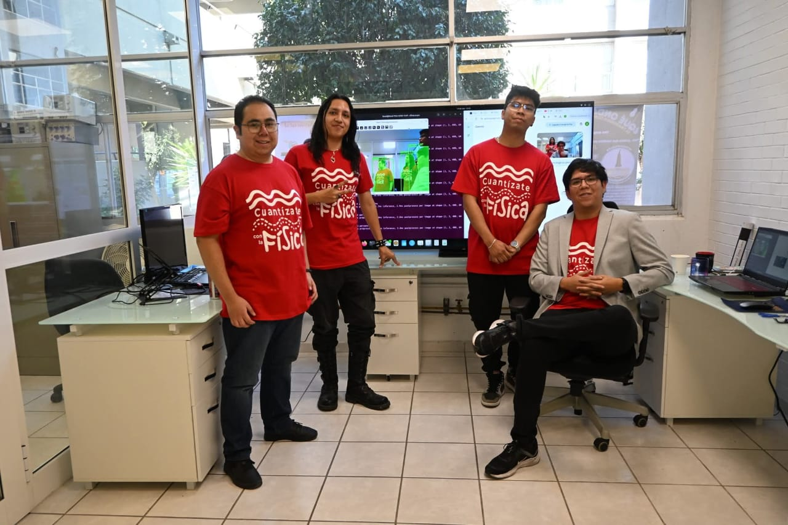
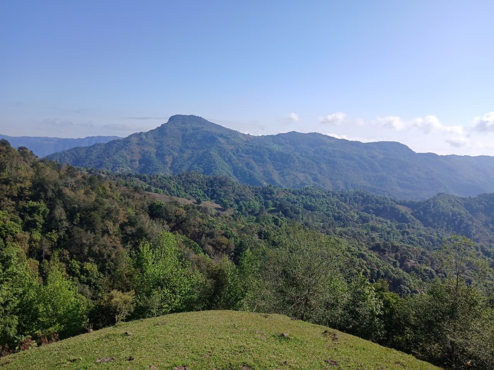

De la investigación al producto.From research to product.
Físico e ingeniero de IA que convierte investigación científica en productos de software desplegables: del diseño de redes neuronales y datos sintéticos a aplicaciones en producción para escritorio, web y nube.
Soy físico e investigador en IA, enfocado en convertir ciencia compleja en productos de IA desplegables y de alto impacto. Mi experiencia une la ejecución técnica full-stack con el desarrollo estratégico de producto, con sistemas escalables construidos para química computacional, ciencia de materiales y diagnóstico médico.
Mis logros más importantes implican la responsabilidad de principio a fin de herramientas científicas de IA: desde la generación de datos sintéticos y el diseño de arquitecturas neuronales propias hasta aplicaciones de escritorio listas para producción y sistemas agénticos desplegados en la nube. Soy licenciado en Física por la Universidad Nacional Autónoma de México (UNAM), con conocimientos en Inteligencia Artificial, Ciencia de Materiales, Ciencia de Datos y Química Computacional.
Me motiva el reto de convertir investigación de frontera en tecnología confiable y centrada en las personas. Busco colaborar con innovadores y organizaciones que quieran aprovechar la IA de vanguardia para resolver los retos más urgentes de la ciencia y la industria.
Soluciones de IA de principio a fin en química computacional, ciencia de materiales, paleontología y más.
Un tablero kanban sin configuración, con subtareas, varios lienzos, recordatorios por Telegram y resúmenes por correo escritos con IA. En producción, solo por invitación.
Finanzas, inversiones, nutrición, sueño, agua, gimnasio y metas en un solo panel, con registro de comidas por IA y un coach de gimnasio con IA. En producción, solo por invitación.
Lecturas escritas con IA a tu nivel MCER en inglés, italiano, alemán o coreano, con vocabulario al tocar una palabra, cuestionarios, tutor con IA y tarjetas de memoria. En producción, solo por invitación.
Modelo de aprendizaje profundo que predice el espesor de películas delgadas de AZO a partir de espectros de transmitancia. Entrenado con 1.2 M de espectros sintéticos; MAPE de 6.91% en películas reales. Publicado en ACS Omega.

Redes neuronales profundas para predecir la actividad biológica de compuestos contra el Alzheimer y antibióticos. MAPE de 5.52%, R² de 0.81.
Cofundé una startup SaaS que despliega asistentes agénticos de IA para el sector médico, con pipelines RAG e infraestructura en la nube.
U-Net convolucional 3D para restaurar especímenes fósiles dañados. Presentado en el XIX Congreso Nacional de Paleontología.
Dirigí el desarrollo de hardware y software de un satélite enlatado, con visualización de datos en tiempo real. Lugar 22 de 101 equipos a nivel nacional.

U-Net para clasificar el sistema cristalino y predecir parámetros de red a partir de espectros de DRX. MAPE de 1%.

Colaboración internacional en rastreo 3D con OpenCV, redes de Raspberry Pi y datos sintéticos de simulación.
Este sitio está construido sobre AmaroX, mi marca personal. Un termo negro mate y un espresso a la misma hora todos los días: objetos precisos, silenciosos y de uso diario. Cinco materiales, un acento cálido, Inter para las palabras y JetBrains Mono para los datos.
Colaboremos. Investigación en IA, desarrollo de producto o consultoría: escríbeme.
Busco colaborar con innovadores y organizaciones que quieran aprovechar la IA de vanguardia para resolver retos urgentes de la ciencia y la industria.